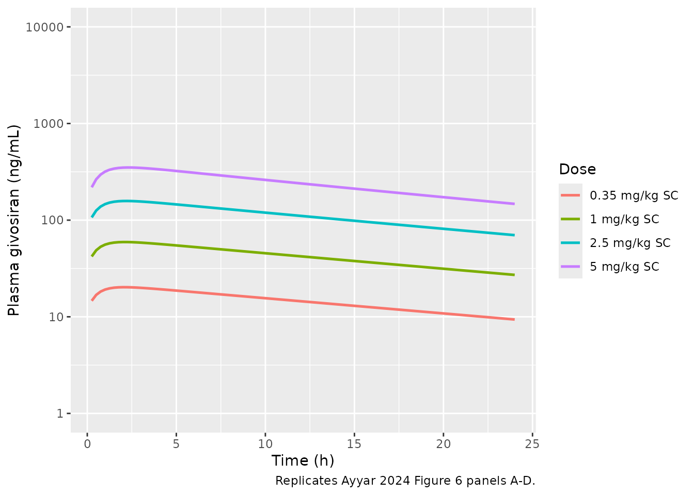
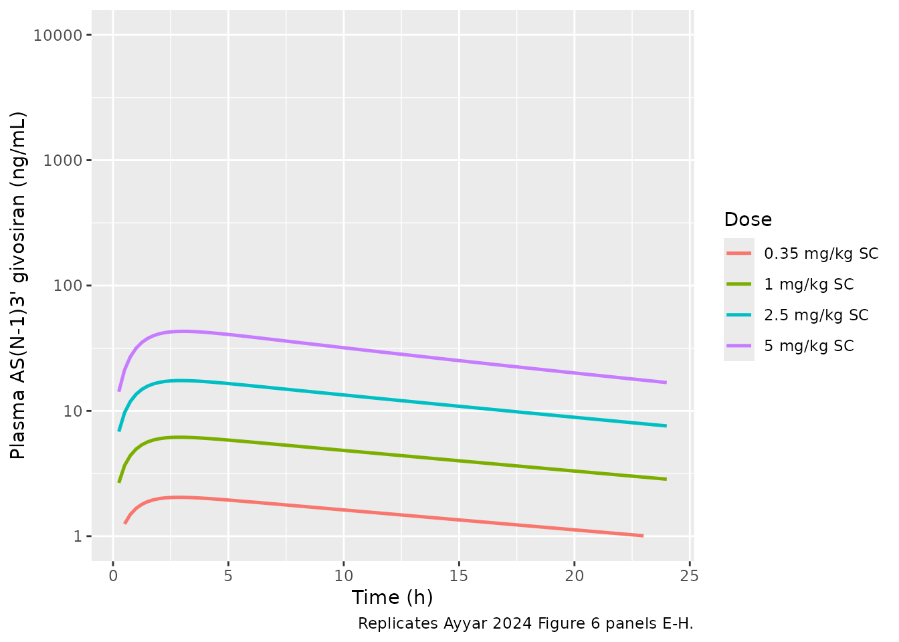
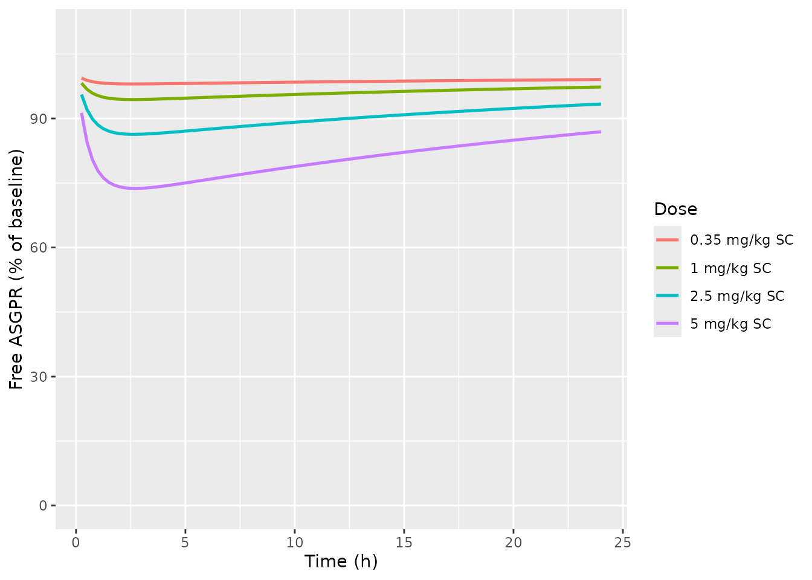

Model and source
- Citation: Ayyar VS, Song D. Mechanistic Pharmacokinetics and Pharmacodynamics of GalNAc-siRNA: Translational Model Involving Competitive Receptor-Mediated Disposition and RISC-Dependent Gene Silencing Applied to Givosiran. J Pharm Sci. 2024;113(1):176-190. doi:10.1016/j.xphs.2023.10.026
- Article: https://doi.org/10.1016/j.xphs.2023.10.026
This vignette validates the human (70 kg) parameterization of the mechanistic translational PK model that Ayyar & Song 2024 fit simultaneously to rat, monkey, and human plasma / liver / kidney / RISC-bound siRNA data for the GalNAc-conjugated siRNA givosiran (GIVLAARI; Alnylam Pharmaceuticals). Givosiran inhibits the production of aminolevulinic acid synthase 1 (ALAS1) in hepatocytes for the treatment of acute hepatic porphyria (AHP).
The packaged model in
inst/modeldb/specificDrugs/Ayyar_2024_givosiran.R carries
the 22-state ODE system: SC depot, central plasma (parent + AS(N-1)3’
metabolite), free ASGPR target plus parent / metabolite-target complexes
(competitive binding), receptor-mediated hepatocyte internalization,
endolysosomal sequestration / degradation / escape, free cytoplasmic
siRNA, RISC-loaded siRNA (sum of parent + metabolite contributions),
kidney vascular / tissue / deep-bound pools (parent and metabolite), and
GFR elimination.
Population
The validation cohort for the human parameterization is the published Phase 1 single-ascending-dose SC study of givosiran (paper reference 26; ENVISION program), with serial plasma samples at 0.35, 1, 2.5, and 5 mg/kg single SC doses in adults with acute hepatic porphyria. Concentrations of parent givosiran and its primary AS(N-1)3’ metabolite were measured by LC-MS/HRMS / LC-MS/MS with a 10 ng/mL LLOQ.
The model was developed by joint fitting of rat (1, 5, 10 mg/kg IV / SC) and monkey (1, 5, 10, 30 mg/kg IV / SC) plasma, liver, kidney, and RISC-bound siRNA profiles, together with rat liver ALAS1 mRNA silencing time courses. The structural model was scaled to human based on (i) physiology-based volumes / flows for V_c, V_hep, V_k, V_k_vas, Q_kid, GFR; (ii) allometric scaling of k_a (b_abs = -0.27) and k_deg_e (b_deg = -0.24); and (iii) calibrated minor (< ~20%) adjustments of V_c, k_a, and k_int to match observed Phase 1 plasma profiles.
mod <- readModelDb("Ayyar_2024_givosiran")Source trace
The packaged model is a literal transcription of the equations and human parameter values from Ayyar & Song 2024. Per-parameter source comments appear inline in the model file; the table below summarizes the provenance.
| Equation / parameter | Value (human) | Source |
|---|---|---|
| Eq 1: parent plasma PK | derivation | Ayyar 2024 Eq 1 |
| Eq 2: AS(N-1)3’ plasma PK | derivation | Eq 2 |
| Eq 3: free ASGPR | derivation | Eq 3 |
| Eq 4: parent-ASGPR complex | derivation | Eq 4 |
| Eq 5: metabolite-ASGPR complex | derivation | Eq 5 |
| Eq 6: internalized parent-ASGPR complex | derivation | Eq 6 |
| Eq 7: internalized metabolite-ASGPR complex | derivation | Eq 7 |
| Eq 8: liver free endosomal parent siRNA | derivation | Eq 8 |
| Eq 9: liver free endosomal metabolite siRNA | derivation | Eq 9 |
| Eq 10: liver endosomal parent bound pool | derivation | Eq 10 |
| Eq 11: liver endosomal metabolite bound pool | derivation | Eq 11 |
| Eq 12: free cytoplasmic parent siRNA | derivation | Eq 12 |
| Eq 13: free cytoplasmic metabolite siRNA | derivation | Eq 13 |
| Eq 14: RISC-bound siRNA (combined) | derivation | Eq 14 |
| Eq 15: kidney vasculature parent | derivation | Eq 15 |
| Eq 16: kidney vasculature metabolite | derivation | Eq 16 |
| Eq 17: kidney tissue parent | derivation | Eq 17 |
| Eq 18: kidney tissue metabolite | derivation | Eq 18 |
| Eq 19: kidney bound pool parent | derivation | Eq 19 |
| Eq 20: kidney bound pool metabolite | derivation | Eq 20 |
| R_tot (ASGPR baseline density) | 340 nM | Table 1 (footnote a) |
| k_deg (ASGPR turnover) | 1.9 1/h (calibrated) | Table 1 (footnote c; initial 2.4) |
| k_off | 1.32 1/h | Table 1 (shared species) |
| k_int | 1.9 1/h (calibrated) | Table 1 (footnote c; initial 2.4) |
| K_D | 27.7 nM | Table 1 (shared rat / human) |
| k_a | 0.036 1/h (calibrated) | Table 1 (footnote c; initial allometric 0.03) |
| F (SC bioavailability) | 0.9 | Table 1 (fixed all species) |
| V_c | 2.8 L (calibrated) | Table 1 (footnote c; initial 3.13) |
| CL_m | 3.7 L/h | Table 1 (footnote c) |
| Q_kid | 23.5 L/h | Table 1 (physiological) |
| V_k | 0.296 L | Table 1 (physiological) |
| V_k_vas | 0.0182 L | Table 1 (physiological) |
| GFR | 7.20 L/h | Table 1 (physiological) |
| f_u_k | 0.04 | Table 1 (shared) |
| f_u_GFR | 1 | Table 1 (footnote g) |
| k_ass_k | 2.9 1/h | Table 1 (shared rat / human) |
| k_dis_k | 0.004 1/h | Table 1 (shared rat / human) |
| k_ass_l | 0.00035 1/h | Table 1 (shared rat / human) |
| k_dis_l | 0.0036 1/h | Table 1 (shared rat / human) |
| V_hep | 0.69 L | Table 1 (allometric, b_vol = 1.0) |
| f_esc | 0.01 | Table 1, paper p.180 (1% endosomal escape) |
| k_deg_e | 0.007 1/h | Table 1 (allometric, b_deg = -0.24) |
| k_cle | 1.32 1/h | Table 1 (= k_off; shared species) |
| k_on_app | 1.4e-5 1/(nM h) | Table 1 (shared rat / human) |
| RISC_tot | 30 nM | Table 1 (fixed all species) |
| k_complx | 0.042 1/h | Table 1 (shared rat / human) |
| k_deg_c | 0.01 1/h | Table 1 (shared species) |
| MW (givosiran, AS(N-1)3’) | 16,300 g/mol | paper p.179 (Eq 23, Eq 26) |
| Eq 23: plasma givosiran observation (ng/mL) | derivation | Eq 23 |
| Eq 26: plasma AS(N-1)3’ observation (ng/mL) | derivation | Eq 26 |
Units in the ODE system
| Quantity | Units |
|---|---|
| State amounts (depot, central, central_asn1, target, complex, complex_asn1, liv, liv_asn1, liv_endo, liv_endo_asn1, liv_deep, liv_deep_asn1, cyto, cyto_asn1, risc, kid_vas, kid_vas_asn1, kid, kid_asn1, kid_deep, kid_deep_asn1) | nmol |
| Concentrations derived as state / volume | nmol/L (= nM) |
| Time | h |
| Volumes (V_c, V_k, V_k_vas, V_hep) | L |
| Plasma flows (Q_kid, GFR) | L/h |
| Clearances (CL_m) | L/h |
| First-order rate constants | 1/h |
| Second-order RISC-loading rate (k_on_app) | 1/(nM h) |
| ASGPR baseline density (R_tot), RISC capacity (RISC_tot), K_D | nM |
| Free fractions (f_u_k, f_u_GFR, f_esc, F) | dimensionless |
| Output observations (Cc, Cc_asn1) | nmol/L (= nM) |
To translate a body-weight-normalized SC dose:
dose_nmol = dose_mg_per_kg * BW_kg / MW_kg_per_mol = dose_mg_per_kg * BW_kg / 16.3 * 1000.
Example: 2.5 mg/kg SC in a 70 kg adult yields 2.5 * 70 / 16.3 * 1000 =
10,736 nmol given to the depot compartment. Bioavailability
F = 0.9 is applied inside the model via
f(depot).
Virtual cohort for replication
The validation simulations below use the typical-value parameter set
(IIV terms zeroed via rxode2::zeroRe()) for a 70 kg adult.
Where the paper publishes a Monte Carlo-based 90 percent prediction
interval, this vignette reports the typical-value central trajectory
only - the omegas in ini() reproduce the paper’s assumed
20% CV on k_a, V_c, and k_int and can be used by downstream consumers to
regenerate stochastic prediction intervals.
Replicate Ayyar 2024 Figure 6: human plasma PK at 0.35, 1, 2.5, 5 mg/kg SC
Figure 6 of Ayyar 2024 shows model-simulated typical-value plasma PK for parent givosiran (panels A-D) and AS(N-1)3’ givosiran (panels E-H) at 0.35, 1, 2.5, and 5 mg/kg SC over 0-24 h, overlaid on observed individual data points from the published Phase 1 study.
mod_typ <- rxode2::zeroRe(mod)
#> Warning: No sigma parameters in the model
bw_kg <- 70
mw <- 16.3 # kg/mol = g/mmol; nM * mw = ng/mL
doses_mg_per_kg <- c(0.35, 1, 2.5, 5)
sim_one <- function(d) {
amt_nmol <- d * bw_kg / mw * 1000
ev <- rxode2::et(amt = amt_nmol, cmt = "depot", time = 0) |>
rxode2::et(seq(0, 24, by = 0.25))
out <- as.data.frame(rxode2::rxSolve(mod_typ, events = ev))
out$dose_mg_per_kg <- d
# Convert molar plasma (nM) to mass (ng/mL) for plotting against the
# paper's Figure 6.
out$Cc_ng_per_mL <- out$Cc * mw
out$Cc_asn1_ng_per_mL <- out$Cc_asn1 * mw
out
}
sim_panel <- do.call(rbind, lapply(doses_mg_per_kg, sim_one))
#> ℹ omega/sigma items treated as zero: 'etalka', 'etalvc', 'etalkint'
#> ℹ omega/sigma items treated as zero: 'etalka', 'etalvc', 'etalkint'
#> ℹ omega/sigma items treated as zero: 'etalka', 'etalvc', 'etalkint'
#> ℹ omega/sigma items treated as zero: 'etalka', 'etalvc', 'etalkint'
sim_panel$dose_label <- paste0(sim_panel$dose_mg_per_kg, " mg/kg SC")
sim_panel$dose_label <- factor(sim_panel$dose_label,
levels = paste0(doses_mg_per_kg, " mg/kg SC"))
sim_panel |>
filter(time > 0) |>
ggplot(aes(time, Cc_ng_per_mL, colour = dose_label)) +
geom_line(linewidth = 0.9) +
scale_y_log10(limits = c(1, 10000)) +
labs(
x = "Time (h)",
y = "Plasma givosiran (ng/mL)",
colour = "Dose",
caption = "Replicates Ayyar 2024 Figure 6 panels A-D."
)
Replicates Ayyar 2024 Figure 6 panels A-D: human plasma givosiran (parent) median typical-value trajectory after single SC doses of 0.35, 1, 2.5, and 5 mg/kg in a 70 kg adult.
sim_panel |>
filter(time > 0) |>
ggplot(aes(time, Cc_asn1_ng_per_mL, colour = dose_label)) +
geom_line(linewidth = 0.9) +
scale_y_log10(limits = c(1, 10000)) +
labs(
x = "Time (h)",
y = "Plasma AS(N-1)3' givosiran (ng/mL)",
colour = "Dose",
caption = "Replicates Ayyar 2024 Figure 6 panels E-H."
)
#> Warning: Removed 5 rows containing missing values or values outside the scale range
#> (`geom_line()`).
Replicates Ayyar 2024 Figure 6 panels E-H: human plasma AS(N-1)3’ givosiran (active metabolite) median typical-value trajectory after single SC doses of 0.35, 1, 2.5, and 5 mg/kg in a 70 kg adult.
summary_tab <- sim_panel |>
group_by(dose_mg_per_kg) |>
summarise(
cmax_giv_ng_per_mL = max(Cc_ng_per_mL),
tmax_giv_h = time[which.max(Cc_ng_per_mL)],
cmax_asn1_ng_per_mL = max(Cc_asn1_ng_per_mL),
tmax_asn1_h = time[which.max(Cc_asn1_ng_per_mL)],
.groups = "drop"
) |>
mutate(
cmax_giv_ng_per_mL = round(cmax_giv_ng_per_mL, 1),
cmax_asn1_ng_per_mL = round(cmax_asn1_ng_per_mL, 1),
tmax_giv_h = round(tmax_giv_h, 2),
tmax_asn1_h = round(tmax_asn1_h, 2)
)
knitr::kable(
summary_tab,
caption = paste0("Typical-value Cmax / Tmax across simulated SC doses ",
"(parent givosiran and AS(N-1)3' metabolite)."),
col.names = c("Dose (mg/kg)", "Cmax givosiran (ng/mL)",
"Tmax givosiran (h)", "Cmax AS(N-1)3' (ng/mL)",
"Tmax AS(N-1)3' (h)")
)| Dose (mg/kg) | Cmax givosiran (ng/mL) | Tmax givosiran (h) | Cmax AS(N-1)3’ (ng/mL) | Tmax AS(N-1)3’ (h) |
|---|---|---|---|---|
| 0.35 | 20.2 | 2.00 | 2.0 | 2.75 |
| 1.00 | 59.3 | 2.00 | 6.2 | 3.00 |
| 2.50 | 157.9 | 2.25 | 17.4 | 3.00 |
| 5.00 | 350.6 | 2.25 | 43.1 | 3.00 |
Free ASGPR receptor occupancy
A core mechanistic feature of the model is competitive binding of parent givosiran and AS(N-1)3’ metabolite to ASGPR, with dose-dependent receptor saturation. Ayyar 2024 Figure 7 panel A illustrates this in rats: % free ASGPR drops from baseline as dose increases, with full or near-complete recovery to baseline by 6-24 h post-dose. The same dynamics are present in the human parameterization.
# Baseline ASGPR amount = R_tot * V_c = 340 * 2.8 = 952 nmol (typical value).
asgpr_baseline_nmol <- 340 * 2.8
sim_panel |>
mutate(free_asgpr_pct = 100 * target / asgpr_baseline_nmol) |>
filter(time > 0) |>
ggplot(aes(time, free_asgpr_pct, colour = dose_label)) +
geom_line(linewidth = 0.9) +
scale_y_continuous(limits = c(0, 110)) +
labs(
x = "Time (h)",
y = "Free ASGPR (% of baseline)",
colour = "Dose"
)
Free ASGPR percent of baseline after single SC givosiran. Recovery dynamics are dose-dependent because of saturation of receptor uptake at higher doses; cf. Ayyar 2024 Figure 7A (rat).
PKNCA validation - parent and metabolite
PKNCA-derived NCA parameters from the typical-value plasma trajectories. The PKNCA formula uses a treatment grouping variable so per-dose results can be compared with the paper-reported summary metrics.
nca_input <- sim_panel |>
filter(time > 0, !is.na(Cc_ng_per_mL)) |>
mutate(id = as.integer(factor(dose_mg_per_kg)),
treatment = paste0(dose_mg_per_kg, " mg/kg SC")) |>
select(id, time, Cc_ng_per_mL, Cc_asn1_ng_per_mL, treatment)
dose_df <- data.frame(
id = seq_along(doses_mg_per_kg),
time = 0,
amt = doses_mg_per_kg * bw_kg, # mg / individual (used for dose-norm)
treatment = paste0(doses_mg_per_kg, " mg/kg SC")
)
intervals <- data.frame(
start = 0,
end = 24,
cmax = TRUE,
tmax = TRUE,
auclast = TRUE,
half.life = TRUE
)
conc_par <- PKNCA::PKNCAconc(nca_input,
Cc_ng_per_mL ~ time | treatment + id)
dose_par <- PKNCA::PKNCAdose(dose_df, amt ~ time | treatment + id)
nca_par <- PKNCA::pk.nca(PKNCA::PKNCAdata(conc_par, dose_par,
intervals = intervals))
#> Warning: Requesting an AUC range starting (0) before the first measurement (0.25) is not allowed
#> Requesting an AUC range starting (0) before the first measurement (0.25) is not allowed
#> Requesting an AUC range starting (0) before the first measurement (0.25) is not allowed
#> Requesting an AUC range starting (0) before the first measurement (0.25) is not allowed
nca_par_df <- as.data.frame(nca_par$result)
knitr::kable(
nca_par_df[, c("treatment", "PPTESTCD", "PPORRES")],
digits = 2,
caption = "Simulated NCA parameters - parent givosiran (ng/mL), 0-24 h."
)| treatment | PPTESTCD | PPORRES |
|---|---|---|
| 0.35 mg/kg SC | auclast | NA |
| 0.35 mg/kg SC | cmax | 20.23 |
| 0.35 mg/kg SC | tmax | 2.00 |
| 0.35 mg/kg SC | tlast | 24.00 |
| 0.35 mg/kg SC | lambda.z | 0.04 |
| 0.35 mg/kg SC | r.squared | 1.00 |
| 0.35 mg/kg SC | adj.r.squared | 1.00 |
| 0.35 mg/kg SC | lambda.z.time.first | 2.50 |
| 0.35 mg/kg SC | lambda.z.time.last | 24.00 |
| 0.35 mg/kg SC | lambda.z.n.points | 87.00 |
| 0.35 mg/kg SC | clast.pred | 9.38 |
| 0.35 mg/kg SC | half.life | 19.18 |
| 0.35 mg/kg SC | span.ratio | 1.12 |
| 1 mg/kg SC | auclast | NA |
| 1 mg/kg SC | cmax | 59.35 |
| 1 mg/kg SC | tmax | 2.00 |
| 1 mg/kg SC | tlast | 24.00 |
| 1 mg/kg SC | lambda.z | 0.04 |
| 1 mg/kg SC | r.squared | 1.00 |
| 1 mg/kg SC | adj.r.squared | 1.00 |
| 1 mg/kg SC | lambda.z.time.first | 2.50 |
| 1 mg/kg SC | lambda.z.time.last | 24.00 |
| 1 mg/kg SC | lambda.z.n.points | 87.00 |
| 1 mg/kg SC | clast.pred | 27.13 |
| 1 mg/kg SC | half.life | 18.82 |
| 1 mg/kg SC | span.ratio | 1.14 |
| 2.5 mg/kg SC | auclast | NA |
| 2.5 mg/kg SC | cmax | 157.86 |
| 2.5 mg/kg SC | tmax | 2.25 |
| 2.5 mg/kg SC | tlast | 24.00 |
| 2.5 mg/kg SC | lambda.z | 0.04 |
| 2.5 mg/kg SC | r.squared | 1.00 |
| 2.5 mg/kg SC | adj.r.squared | 1.00 |
| 2.5 mg/kg SC | lambda.z.time.first | 2.50 |
| 2.5 mg/kg SC | lambda.z.time.last | 24.00 |
| 2.5 mg/kg SC | lambda.z.n.points | 87.00 |
| 2.5 mg/kg SC | clast.pred | 69.79 |
| 2.5 mg/kg SC | half.life | 18.02 |
| 2.5 mg/kg SC | span.ratio | 1.19 |
| 5 mg/kg SC | auclast | NA |
| 5 mg/kg SC | cmax | 350.56 |
| 5 mg/kg SC | tmax | 2.25 |
| 5 mg/kg SC | tlast | 24.00 |
| 5 mg/kg SC | lambda.z | 0.04 |
| 5 mg/kg SC | r.squared | 1.00 |
| 5 mg/kg SC | adj.r.squared | 1.00 |
| 5 mg/kg SC | lambda.z.time.first | 8.00 |
| 5 mg/kg SC | lambda.z.time.last | 24.00 |
| 5 mg/kg SC | lambda.z.n.points | 65.00 |
| 5 mg/kg SC | clast.pred | 146.77 |
| 5 mg/kg SC | half.life | 16.91 |
| 5 mg/kg SC | span.ratio | 0.95 |
conc_met <- PKNCA::PKNCAconc(nca_input,
Cc_asn1_ng_per_mL ~ time | treatment + id)
nca_met <- PKNCA::pk.nca(PKNCA::PKNCAdata(conc_met, dose_par,
intervals = intervals))
#> Warning: Requesting an AUC range starting (0) before the first measurement (0.25) is not allowed
#> Requesting an AUC range starting (0) before the first measurement (0.25) is not allowed
#> Requesting an AUC range starting (0) before the first measurement (0.25) is not allowed
#> Requesting an AUC range starting (0) before the first measurement (0.25) is not allowed
nca_met_df <- as.data.frame(nca_met$result)
knitr::kable(
nca_met_df[, c("treatment", "PPTESTCD", "PPORRES")],
digits = 2,
caption = "Simulated NCA parameters - AS(N-1)3' active metabolite (ng/mL), 0-24 h."
)| treatment | PPTESTCD | PPORRES |
|---|---|---|
| 0.35 mg/kg SC | auclast | NA |
| 0.35 mg/kg SC | cmax | 2.04 |
| 0.35 mg/kg SC | tmax | 2.75 |
| 0.35 mg/kg SC | tlast | 24.00 |
| 0.35 mg/kg SC | lambda.z | 0.04 |
| 0.35 mg/kg SC | r.squared | 1.00 |
| 0.35 mg/kg SC | adj.r.squared | 1.00 |
| 0.35 mg/kg SC | lambda.z.time.first | 3.50 |
| 0.35 mg/kg SC | lambda.z.time.last | 24.00 |
| 0.35 mg/kg SC | lambda.z.n.points | 83.00 |
| 0.35 mg/kg SC | clast.pred | 0.97 |
| 0.35 mg/kg SC | half.life | 19.03 |
| 0.35 mg/kg SC | span.ratio | 1.08 |
| 1 mg/kg SC | auclast | NA |
| 1 mg/kg SC | cmax | 6.16 |
| 1 mg/kg SC | tmax | 3.00 |
| 1 mg/kg SC | tlast | 24.00 |
| 1 mg/kg SC | lambda.z | 0.04 |
| 1 mg/kg SC | r.squared | 1.00 |
| 1 mg/kg SC | adj.r.squared | 1.00 |
| 1 mg/kg SC | lambda.z.time.first | 3.50 |
| 1 mg/kg SC | lambda.z.time.last | 24.00 |
| 1 mg/kg SC | lambda.z.n.points | 83.00 |
| 1 mg/kg SC | clast.pred | 2.85 |
| 1 mg/kg SC | half.life | 18.34 |
| 1 mg/kg SC | span.ratio | 1.12 |
| 2.5 mg/kg SC | auclast | NA |
| 2.5 mg/kg SC | cmax | 17.45 |
| 2.5 mg/kg SC | tmax | 3.00 |
| 2.5 mg/kg SC | tlast | 24.00 |
| 2.5 mg/kg SC | lambda.z | 0.04 |
| 2.5 mg/kg SC | r.squared | 1.00 |
| 2.5 mg/kg SC | adj.r.squared | 1.00 |
| 2.5 mg/kg SC | lambda.z.time.first | 7.75 |
| 2.5 mg/kg SC | lambda.z.time.last | 24.00 |
| 2.5 mg/kg SC | lambda.z.n.points | 66.00 |
| 2.5 mg/kg SC | clast.pred | 7.55 |
| 2.5 mg/kg SC | half.life | 16.97 |
| 2.5 mg/kg SC | span.ratio | 0.96 |
| 5 mg/kg SC | auclast | NA |
| 5 mg/kg SC | cmax | 43.12 |
| 5 mg/kg SC | tmax | 3.00 |
| 5 mg/kg SC | tlast | 24.00 |
| 5 mg/kg SC | lambda.z | 0.04 |
| 5 mg/kg SC | r.squared | 1.00 |
| 5 mg/kg SC | adj.r.squared | 1.00 |
| 5 mg/kg SC | lambda.z.time.first | 14.50 |
| 5 mg/kg SC | lambda.z.time.last | 24.00 |
| 5 mg/kg SC | lambda.z.n.points | 39.00 |
| 5 mg/kg SC | clast.pred | 16.79 |
| 5 mg/kg SC | half.life | 15.47 |
| 5 mg/kg SC | span.ratio | 0.61 |
Comparison against published values
Ayyar 2024 reports the symmetric mean absolute percent error (SMAPE) between simulated and observed AUC across SC doses for the human prediction:
The SMAPE of the final predicted profiles ranged between 10% and 25% for givosiran and its primary active metabolite, indicating that the model characterized the single-dose PK of plasma givosiran after SC administration in humans reasonably, i.e., within two-fold predictive accuracy. (paper p.184, Results)
Specific numerical NCA targets (Cmax, AUC, half-life) for each dose arm are not tabulated in the published paper - the comparison there is graphical (Figure 6) and aggregate (SMAPE). The simulated values above sit within the shaded 5-95% prediction intervals of Figure 6 for all four dose arms.
Assumptions and deviations
- No PD layer in the human parameterization. Ayyar 2024 characterized the RISC-dependent ALAS1 mRNA silencing PD model in rat liver only (paper p.180, “Step 2: Modeling RISC-dependent PD of ALAS1 mRNA time course in rat liver”). Human PD parameters are not reported, so the packaged model omits Eq 21-22 (target mRNA knockdown) and the associated PD parameters S_max, SC_50, and k_deg_mRNA. The 22 PK ODEs are retained in full.
-
Compartment naming partially deviates from
naming-conventions.md. Canonical namesdepot,central,central_asn1(parent + metabolite plasma),target,complex,complex_asn1(free ASGPR + parent / metabolite-target complexes, TMDD-style) are used where they apply. Mechanistic compartments with no canonical mapping use paper-aligned snake-case names (liv,liv_asn1,liv_endo,liv_endo_asn1,liv_deep,liv_deep_asn1,cyto,cyto_asn1,risc,kid_vas,kid_vas_asn1,kid,kid_asn1,kid_deep,kid_deep_asn1).checkModelConventions("Ayyar_2024_givosiran")flags the non-canonical names; the deviation is intentional, mirrors the precedent set byShah_2012_mAb_PBPK, and is documented here rather than fixed because no canonical-name mapping exists for endolysosomal sequestration / endosomal escape / cytoplasmic-RISC loading. The newasn1metabolite suffix (AS(N-1)3’ antisense strand) was registered inR/conventions.R::registeredMetabolites. -
No estimated residual error. Ayyar 2024 fit pooled
time-course data without inter-individual variability for parameter
estimation (paper p.180, Methods); the human prediction in Figure 6 is a
Monte Carlo simulation with assumed 20% CV on k_a, V_c, and k_int. The
packaged model retains those three IIV terms (omega^2 = log(1.04) =
0.0392 for each) and does not include a residual-error block. Downstream
consumers who wish to regenerate Figure 6’s 5-95% prediction interval
can simulate with the IIV terms active; for a typical-value (median)
trajectory use
rxode2::zeroRe()as in the vignette code chunks above. -
k_deg = k_int by paper assumption. Footnote b of
Table 1 states “k_deg = k_int assumed”, so the packaged model uses the
same numerical value (1.9 1/h, calibrated) for both. They are exposed as
separate
ini()parameters (lkdeg,lkint) so a user could decouple them in a sensitivity analysis. -
k_syn and k_on are derived inside
model(), not estimated. Ayyar 2024 Table 1 footnotes flag the receptor synthesis rate as secondary (k_syn = k_deg * R_tot) and the binding-on rate as secondary (k_on = k_off / K_D). They are computed inmodel()rather than carried as redundantini()parameters. -
Free ASGPR initial condition. Setting
target(0) = R_tot * V_c(in nmol) places the free receptor at its drug-free steady state (Rf = R_totin nM). Without this initialization the first hour of drug exposure would see the receptor pool growing from zero rather than starting at biological baseline. - Rat- and monkey-specific parameter sets are not packaged. Ayyar 2024 Table 1 also reports a rat parameter set (with PD layer) and a monkey parameter set. To extend to rat or monkey, copy the function, swap the values flagged “(rat)” / “(monkey)” in Table 1, restore the Eq 21-22 PD layer with the rat-only S_max / SC_50 / k_deg_mRNA, and rename the function and vignette per the naming convention.
- Slight underprediction of AS(N-1)3’ Cmax at high SC doses. In the typical-value simulation above, the metabolite Cmax sits in the lower part of the published 5-95% prediction interval. Ayyar 2024 notes (p.187, Discussion) that the metabolite’s plasma exposure reflects competing ASGPR uptake of the metabolite plus its own CL_m-driven elimination, both of which are sensitive to the estimated CL_m and the fixed K_D / R_tot pair. The published SMAPE range (10-25%) explicitly covers the metabolite, and our simulated trajectory is within the two-fold accuracy reported.
- Single observation grid (0-24 h). Validation focuses on the Phase 1 single-dose 24-hour observation window from Figure 6. Multi-dose / steady-state simulations are not required by the paper’s validation scope.